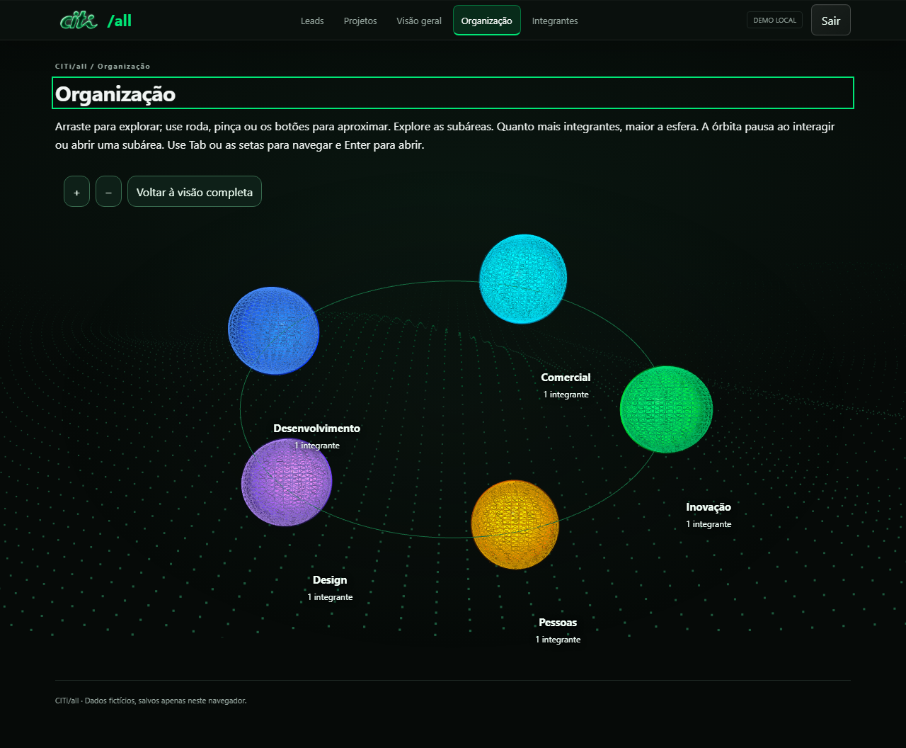
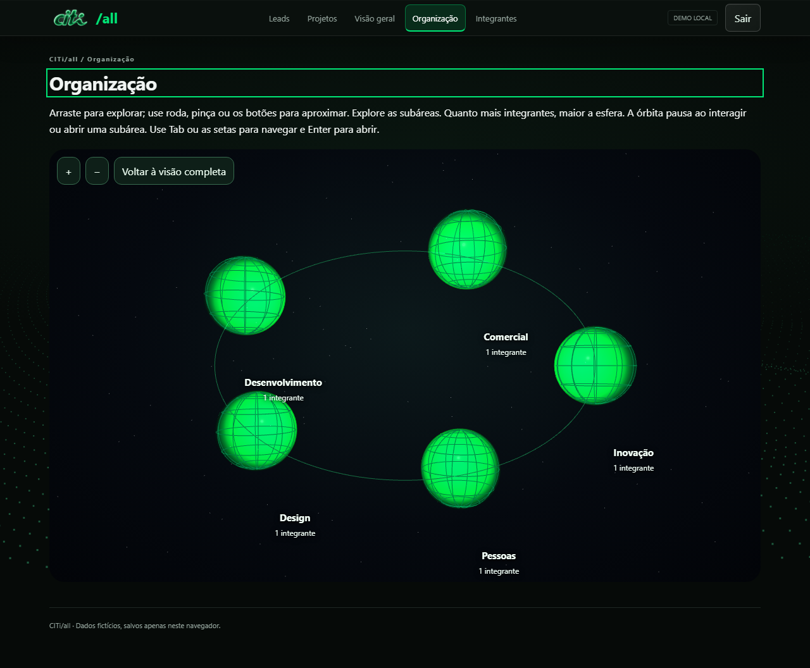

Organização no espaço
Mesmo navegador, dados iniciais, câmera e janela de 1280 × 900. Movimento reduzido fixa a órbita para comparar.
Visão completa
Antes
Depois
Primeiro globo selecionado
Segundo globo selecionado
Exploração
Entrada direta, duas seleções e retornos, movimento orbital, arrasto e aproximação.